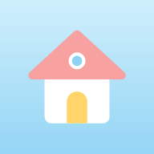

Salita.Guía para probar la app
Comunicación entre docentes, familias y dirección · Sala Roja - Turno Tarde
1. Entrar
- Apuntá la cámara del celular al código QR (o escribí el link que está abajo del código).
- Elegí tu perfil: Docente, Familia o Dirección.
- Para probar bien, lo ideal es usar 2 o 3 celulares, cada uno con un perfil distinto: lo que hace uno le aparece al otro al instante.
2. Qué probar en cada perfil
🍎 Docente
- Comunicación → tocá una plantilla rápida y enviá el comunicado.
- Tocá el interruptor para cerrar y abrir el horario de consultas.
- Banco de Actividades → abrí una guía y mirá en qué cajón está cada material.
- Subí una actividad nueva con una foto.
- Gestión Interna → pedí plasticola y confirmá el aviso de Dirección.
👨👩👧 Familia
- Mirá el comunicado nuevo y tocá "Marcar como leído": a la seño le sube el contador de vistos.
- Consultas → escribile a la seño.
- Con el horario cerrado, el mensaje queda en espera hasta que la seño abra el horario.
🏫 Dirección
- Panel General → marcá como repuesto el pedido de stock de la seño.
- Mirá los reportes de sala.
- Avisos a Docentes → mandá un aviso y agregá una fecha al calendario.
3. Para tener en cuenta
🔄 Cambiar de perfilTocá 👤 Perfil (abajo a la derecha) → "Cambiar de rol".
♻️ Antes de presentarPerfil → "Reiniciar demo" borra todo lo de las pruebas y deja los datos de ejemplo.
📲 Instalarla (iPhone)En Safari: botón Compartir ⬆️ → "Agregar a pantalla de inicio".
📲 Instalarla (Android)En Chrome: menú ⋮ → "Instalar aplicación".
🔒 Es una demo públicaNo cargues datos reales ni fotos donde se vean caras de chicos.
🔔 AvisosLas novedades llegan con un cartelito mientras la app está abierta.